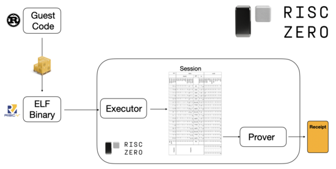
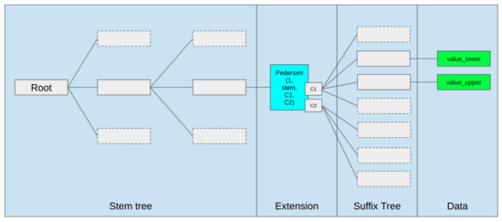
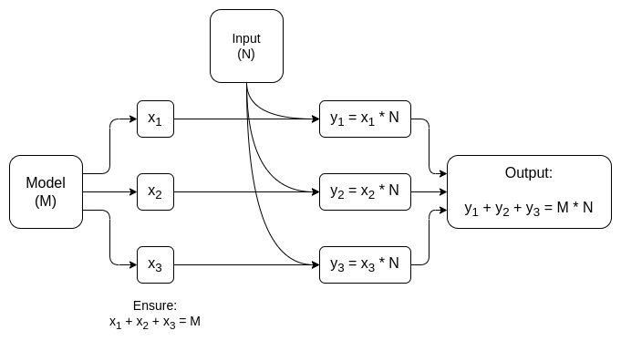
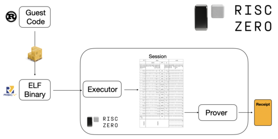
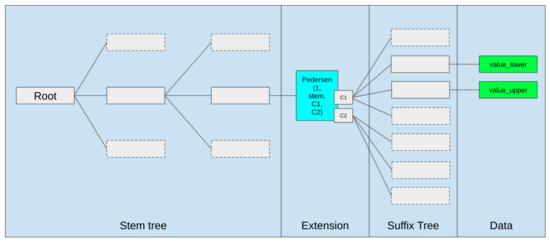
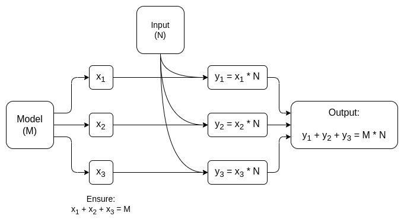

Glue and coprocessor architectures
2024 Sep 01
See all posts
Glue and coprocessor architectures
Special thanks to Justin Drake, Georgios Konstantopoulos, Andrej Karpathy, Michael Gao and various Flashbots contributors for feedback and review.
If you analyze any resource-intensive computation being done in the modern world in even a medium amount of detail, one feature that you will find again and again is that the computation can be broken up into two parts:
- A relatively small amount of complex, but not very computationally intensive, "business logic"
- A large amount of intensive, but highly structured, "expensive work"
These two forms of computation are best handled in different ways: the former, with an architecture that may have lower efficiency but needs to have very high generality, and the latter, with an architecture that may have lower generality, but needs to have very high efficiency.
What are some examples of this separation in practice?
To start off, let us look under the hood of the environment I am most familiar with: the Ethereum Virtual Machine (EVM). Here is the geth debug trace of a recent Ethereum transaction that I did: updating the IPFS hash of my blog on ENS. The transaction consumes a total of 46924 gas, which can be categorized in this way:
- Base cost: 21,000
- Calldata: 1,556
- EVM execution: 24,368
SLOAD opcode: 6,400SSTORE opcode: 10,100LOG opcode: 2,149- Other: 6,719
EVM trace of an ENS hash update. Second last column is gas consumption.
The moral of the story is: most of the execution (~73% if you look at the EVM alone, ~85% if you include the portion of the base cost that covers computation) is concentrated in a very small number of structured expensive operations: storage reads and writes, logs, and cryptography (the base cost includes 3000 to pay for signature verification, and the EVM also includes 272 to pay for hashing). The rest of the execution is "business logic": fiddling around with the bits of the calldata to extract the ID of the record I am trying to set and the hash I am setting it to, and so on. In a token transfer, this would include adding and subtracting balances, in a more advanced application, this might include a loop, and so on.
In the EVM, these two forms of execution are handled in different ways. The high-level business logic is written in a higher-level language, often Solidity, which compiles to the EVM. The expensive work is still triggered by EVM opcodes (SLOAD, etc), but > 99% of the actual computation is done in specialized modules written directly inside of client code (or even libraries).
To reinforce our understanding of this pattern, let's explore it in another context: AI code written in python using torch.

Forward pass of one block of a transformer model, source.
What do we see here? We see a relatively small amount of "business logic", written in python, which describes the structure of the operations that are being done. In an actual application, there will also be another type of business logic, which determines details like how you get the input and what you do to the output. But, if we peek into each of the individual operations themselves (self.norm, torch.cat, +, *, the various steps inside self.attn...), we see vectorized computation: the same operation getting computed on a large number of values in parallel. Similarly to the first example, a small portion of the compute is spent on business logic, and the bulk of the compute is spent on performing the big structured matrix and vector operations - in fact, the majority is just matrix multiplication.
Just like in the EVM example, the two types of work are handled in two different ways. The high-level business logic code is written in Python, a highly general and flexible language which is also very slow, and we just accept the inefficiency because it only touches a small part of the total computational cost. Meanwhile, the intensive operations are written in highly optimized code, often CUDA code running on a GPU. Increasingly, we're even starting to see LLM inference being done on ASICs.
Modern programmable cryptography, such as SNARKs, follows a similar pattern yet again, on two levels. First, the prover can be written in a high-level language where the heavy work is done with vectorized operations, just like the AI example above. My circle STARK code here shows this in action. Second, the program that is being executed inside the cryptography can itself be written in a way that is split between generalized business logic and highly structured expensive work.
To see how this works, we can look at one of the latest trends in STARK proving. To be general-purpose and easy to use, teams are increasingly building STARK provers for widely-adopted minimal virtual machines, such as RISC-V. Any program whose execution needs to be proven can be compiled into RISC-V, and then the prover can prove the RISC-V execution of that code.

Diagram from RiscZero documentation
This is super convenient: it means that we only need to write the prover logic once, and from that point forward any program that needs to be proven can just be written in any "conventional" programming language (eg. RiskZero supports Rust). However, there is a problem: this approach incurs significant overhead. Programmable cryptography is already very expensive; adding the overhead of running code inside a RISC-V interpreter is too much. And so developers have come up with a hack: you identify the specific expensive operations that make up the bulk of the computation (often that's hashes and signatures), and you create specialized modules to prove those operations extremely efficiently. And then you just combine the inefficient-but-general RISC-V proving system and the efficient-but-specialized proving systems together, and you get the best of both worlds.
Programmable cryptography other than ZK-SNARKs, such as multi-party computation (MPC) and fully homomorphic encryption (FHE) will likely be optimized using a similar approach.
What is the general pattern at play?
Modern computation is increasingly following what I call a glue and coprocessor architecture: you have some central "glue" component, which has high generality but low efficiency, which is responsible for shuttling data between one or more coprocessor components, which have low generality but high efficiency.

This is a simplification: in practice, there are almost always more than two levels along the tradeoff curve between efficiency and generality. GPUs, and other chips that are often called "coprocessors" in industry, are less general than CPUs but more general than ASICs. There are complicated tradeoffs of how far to specialize, which are decided based on projections and intuitions about what parts of an algorithm will still be the same in five years, and which parts will change in six months. In a ZK-proving architecture, we often similarly see multiple layers of specialization. But for a broad mental model, it's sufficient to think about two levels. There are parallels to this in many domains of computation:
| Ethereum |
EVM |
Dedicated opcodes/precompiles for specialized operations |
| AI (eg. LLMs) |
Python (often) |
GPU via CUDA; ASICs |
| Web apps |
Javascript |
WASM |
| Programmable cryptography |
RISC-V |
Specialized modules (eg. for hashes and signatures) |
From the above examples, it might feel like a law of nature that of course computation can be split in this way. And indeed, you can find examples of specialization in computing for decades. However, I would argue that this separation is increasing. I think this is true for a few key reasons:
- We have only relatively recently hit the limits of increasing CPU clock speed, and so further gains can only come from parallelization. However, parallelization is hard to reason about, and so it's often more practical for developers to continue reasoning sequentially, and let the parallelization happen in the backend, wrapped inside specialized modules built for specific operations.
- Computation has only recently become so fast that the computational costs of business logic have become truly negligible. In this world, it makes sense to optimize the VM that business logic runs in for goals other than compute efficiency: developer friendliness, familiarity, security, and other similar objectives. Meanwhile, the specialized "coprocessor" modules can continue to be designed for efficiency, and get their security and developer friendliness properties from the relatively simple "interface" that they have with the glue.
- It's becoming clearer what the most important expensive operations are. This is most obvious in cryptography, where it's clear what kinds of specific expensive operations are most likely to be used: modular arithmetic, elliptic curve linear combinations (aka multi-scalar multiplications), Fast Fourier transforms, and so on. It's also becoming clearer in AI, where the bulk of computation has been "mostly matrix multiplication" (albeit with different levels of precision) for over two decades. Similar trends appear in other domains. There are just much fewer unknown unknowns in (computationally intensive) computing than there were 20 years ago.
What does this imply?
A key takeaway is that glue should optimize for being good glue, and coprocessors should optimize for being good coprocessors. We can explore the implications of this in a few key areas.
EVM
Blockchain virtual machines (eg. EVM) don't need to be efficient, they just need to be familiar. Computation in an inefficient VM can be made almost as efficient in practice as computation in a natively efficient VM by just adding the right coprocessors (aka "precompiles"). The overhead incurred by eg. the EVM's 256-bit registers is relatively small, while the benefits from the EVM's familiarity and existing developer ecosystem are great and durable. Developer teams optimizing the EVM are even finding that lack of parallelization is often not a primary barrier to scalability.
The best ways to improve the EVM may well just be (i) adding better precompiles or specialized opcodes, eg. some combination of EVM-MAX and SIMD may be justified, and (ii) improving the storage layout, which eg. the Verkle tree changes do as a side effect by greatly reducing the cost of accessing storage slots that are beside each other.

Storage optimizations in the Ethereum Verkle tree proposal, putting adjacent storage keys together and adjusting gas costs to reflect this. Optimizations like this, together with better precompiles, may well matter more than tweaking the EVM itself.
Secure computing and open hardware
One of the big challenges with improving security of modern computing at the hardware layer is the overcomplicated and proprietary nature of it: chips are designed to be highly efficient, which requires proprietary optimizations. Backdoors are easy to hide, and side channel vulnerabilities keep getting discovered.
There continues to be a valiant effort to push more open and more secure alternatives from multiple angles. Some computations are increasingly done in trusted execution environments, including on users' phones, and this has increased security for users already. The push toward more-open-source consumer hardware continues, with recent victories like a RISC-V laptop running Ubuntu.
RISC-V laptop running Debian, source
However, efficiency continues to be a problem. The author of the above-linked article writes:
It's unfeasible for a newer, open-source chip design like RISC-V to go toe to toe with processor technologies that have been around for and refined for decades. Progress has a starting point.
More paranoid ideas, like this design for building a RISC-V computer on top of an FPGA, face even more overhead. But what if glue and coprocessor architectures mean that this overhead does not actually matter? What if we accept that open and secure chips will be be slower than proprietary chips, if needed even giving up on common optimizations like speculative execution and branch prediction, but try to compensate for this by adding (if needed, proprietary) ASIC modules for specific types of computation that are the most intensive? Sensitive computations can be done in a "main chip" that would be optimized for security, open source design and side-channel resistance. More intensive computations (eg. ZK-proving, AI) would be done in the ASIC modules, which would learn less information (potentially, with cryptographic blinding, perhaps in some cases even zero information) about the computation being performed.
Cryptography
Another key takeaway is that this is all very optimistic for cryptography, especially programmable cryptography, going mainstream. We're already seeing hyper-optimized implementations of some specific highly structured computations in SNARKs, MPC and other settings: overhead for some hash functions is in the range of being only a few hundred times more expensive than running the computation directly, and extremely low overhead for AI (which is mostly just matrix multiplications) is also possible. Further improvements like GKR will likely reduce this further. Fully general purpose VM execution, especially if executed inside a RISC-V interpreter, will likely continue to have something like ten-thousand-fold overhead, but for the reasons described in this post, this will not matter: as long as the most intensive parts of a computation are handled separately using efficient dedicated techniques, the total overhead will be manageable.

A simplified diagram of a dedicated MPC for matrix multiplication, the largest component in AI model inference. See this paper for more details, including ways to keep both the model and the input private.
One exception to the idea that "glue only needs to be familiar, not efficient" is latency, and to a smaller extent data bandwidth. If a computation involves doing repeated heavy operations on the same data dozens of times (as cryptography and AI both do), any delays that result from an inefficient glue layer can become a primary bottleneck to running time. Hence, glue also has efficiency requirements, though they are more specific ones.
Conclusion
On the whole, I consider the above trends to be very positive developments from several perspectives. First, it is the logical way to maximize computing efficiency while preserving developer friendliness, and being able to get more of both at the same time benefits everyone. In particular, by enabling more efficiency gains from specialization on the client side, it improves our ability to run computations that are both sensitive and performance-demanding (eg. ZK-proving, LLM inference) locally on the user's hardware. Second, it creates a large window of opportunity to ensure that the drive for efficiency does not compromise other values, most notably security, openness and simplicity: side-channel security and openness in computer hardware, reducing circuit complexity in ZK-SNARKs, and reducing complexity in virtual machines. Historically, the drive for efficiency has led to these other factors taking a back seat. With glue-and-coprocessor architectures, it no longer needs to. One part of the machine optimizes for efficiency, and the other part optimizes for generality and other values, and the two work together.
The trend is also very beneficial for cryptography, because cryptography itself is a major example of "expensive structured computation", which gets accelerated by this trend. This adds a further opportunity to increase security. A security increase also becomes possible in the world of blockchains: we can worry less about optimizing virtual machines, and instead focus more on optimizing precompiles and other features that live alongside virtual machines.
Third, this trend presents an opportunity for smaller and newer players to participate. If computation is becoming less monolithic, and more modular, that greatly decreases the barrier to entry. Even with an ASIC for one type of computation, it's possible to make a difference. The same will be true in the ZK-proving space, and in EVM optimization. Writing code that has near-frontier-level efficiency becomes much easier and more accessible. Auditing and formally verifying such code becomes easier and more accessible. And finally, because these very different domains of computing are converging on some common patterns, there is more room for collaboration and learning between them.
Glue and coprocessor architectures
2024 Sep 01 See all postsSpecial thanks to Justin Drake, Georgios Konstantopoulos, Andrej Karpathy, Michael Gao and various Flashbots contributors for feedback and review.
If you analyze any resource-intensive computation being done in the modern world in even a medium amount of detail, one feature that you will find again and again is that the computation can be broken up into two parts:
These two forms of computation are best handled in different ways: the former, with an architecture that may have lower efficiency but needs to have very high generality, and the latter, with an architecture that may have lower generality, but needs to have very high efficiency.
What are some examples of this separation in practice?
To start off, let us look under the hood of the environment I am most familiar with: the Ethereum Virtual Machine (EVM). Here is the geth debug trace of a recent Ethereum transaction that I did: updating the IPFS hash of my blog on ENS. The transaction consumes a total of 46924 gas, which can be categorized in this way:
SLOADopcode: 6,400SSTOREopcode: 10,100LOGopcode: 2,149EVM trace of an ENS hash update. Second last column is gas consumption.
The moral of the story is: most of the execution (~73% if you look at the EVM alone, ~85% if you include the portion of the base cost that covers computation) is concentrated in a very small number of structured expensive operations: storage reads and writes, logs, and cryptography (the base cost includes 3000 to pay for signature verification, and the EVM also includes 272 to pay for hashing). The rest of the execution is "business logic": fiddling around with the bits of the calldata to extract the ID of the record I am trying to set and the hash I am setting it to, and so on. In a token transfer, this would include adding and subtracting balances, in a more advanced application, this might include a loop, and so on.
In the EVM, these two forms of execution are handled in different ways. The high-level business logic is written in a higher-level language, often Solidity, which compiles to the EVM. The expensive work is still triggered by EVM opcodes (
SLOAD, etc), but > 99% of the actual computation is done in specialized modules written directly inside of client code (or even libraries).To reinforce our understanding of this pattern, let's explore it in another context: AI code written in python using torch.
Forward pass of one block of a transformer model, source.
What do we see here? We see a relatively small amount of "business logic", written in python, which describes the structure of the operations that are being done. In an actual application, there will also be another type of business logic, which determines details like how you get the input and what you do to the output. But, if we peek into each of the individual operations themselves (
self.norm,torch.cat,+,*, the various steps insideself.attn...), we see vectorized computation: the same operation getting computed on a large number of values in parallel. Similarly to the first example, a small portion of the compute is spent on business logic, and the bulk of the compute is spent on performing the big structured matrix and vector operations - in fact, the majority is just matrix multiplication.Just like in the EVM example, the two types of work are handled in two different ways. The high-level business logic code is written in Python, a highly general and flexible language which is also very slow, and we just accept the inefficiency because it only touches a small part of the total computational cost. Meanwhile, the intensive operations are written in highly optimized code, often CUDA code running on a GPU. Increasingly, we're even starting to see LLM inference being done on ASICs.
Modern programmable cryptography, such as SNARKs, follows a similar pattern yet again, on two levels. First, the prover can be written in a high-level language where the heavy work is done with vectorized operations, just like the AI example above. My circle STARK code here shows this in action. Second, the program that is being executed inside the cryptography can itself be written in a way that is split between generalized business logic and highly structured expensive work.
To see how this works, we can look at one of the latest trends in STARK proving. To be general-purpose and easy to use, teams are increasingly building STARK provers for widely-adopted minimal virtual machines, such as RISC-V. Any program whose execution needs to be proven can be compiled into RISC-V, and then the prover can prove the RISC-V execution of that code.

Diagram from RiscZero documentation
This is super convenient: it means that we only need to write the prover logic once, and from that point forward any program that needs to be proven can just be written in any "conventional" programming language (eg. RiskZero supports Rust). However, there is a problem: this approach incurs significant overhead. Programmable cryptography is already very expensive; adding the overhead of running code inside a RISC-V interpreter is too much. And so developers have come up with a hack: you identify the specific expensive operations that make up the bulk of the computation (often that's hashes and signatures), and you create specialized modules to prove those operations extremely efficiently. And then you just combine the inefficient-but-general RISC-V proving system and the efficient-but-specialized proving systems together, and you get the best of both worlds.
Programmable cryptography other than ZK-SNARKs, such as multi-party computation (MPC) and fully homomorphic encryption (FHE) will likely be optimized using a similar approach.
What is the general pattern at play?
Modern computation is increasingly following what I call a glue and coprocessor architecture: you have some central "glue" component, which has high generality but low efficiency, which is responsible for shuttling data between one or more coprocessor components, which have low generality but high efficiency.
This is a simplification: in practice, there are almost always more than two levels along the tradeoff curve between efficiency and generality. GPUs, and other chips that are often called "coprocessors" in industry, are less general than CPUs but more general than ASICs. There are complicated tradeoffs of how far to specialize, which are decided based on projections and intuitions about what parts of an algorithm will still be the same in five years, and which parts will change in six months. In a ZK-proving architecture, we often similarly see multiple layers of specialization. But for a broad mental model, it's sufficient to think about two levels. There are parallels to this in many domains of computation:
From the above examples, it might feel like a law of nature that of course computation can be split in this way. And indeed, you can find examples of specialization in computing for decades. However, I would argue that this separation is increasing. I think this is true for a few key reasons:
What does this imply?
A key takeaway is that glue should optimize for being good glue, and coprocessors should optimize for being good coprocessors. We can explore the implications of this in a few key areas.
EVM
Blockchain virtual machines (eg. EVM) don't need to be efficient, they just need to be familiar. Computation in an inefficient VM can be made almost as efficient in practice as computation in a natively efficient VM by just adding the right coprocessors (aka "precompiles"). The overhead incurred by eg. the EVM's 256-bit registers is relatively small, while the benefits from the EVM's familiarity and existing developer ecosystem are great and durable. Developer teams optimizing the EVM are even finding that lack of parallelization is often not a primary barrier to scalability.
The best ways to improve the EVM may well just be (i) adding better precompiles or specialized opcodes, eg. some combination of EVM-MAX and SIMD may be justified, and (ii) improving the storage layout, which eg. the Verkle tree changes do as a side effect by greatly reducing the cost of accessing storage slots that are beside each other.

Storage optimizations in the Ethereum Verkle tree proposal, putting adjacent storage keys together and adjusting gas costs to reflect this. Optimizations like this, together with better precompiles, may well matter more than tweaking the EVM itself.
Secure computing and open hardware
One of the big challenges with improving security of modern computing at the hardware layer is the overcomplicated and proprietary nature of it: chips are designed to be highly efficient, which requires proprietary optimizations. Backdoors are easy to hide, and side channel vulnerabilities keep getting discovered.
There continues to be a valiant effort to push more open and more secure alternatives from multiple angles. Some computations are increasingly done in trusted execution environments, including on users' phones, and this has increased security for users already. The push toward more-open-source consumer hardware continues, with recent victories like a RISC-V laptop running Ubuntu.
RISC-V laptop running Debian, source
However, efficiency continues to be a problem. The author of the above-linked article writes:
More paranoid ideas, like this design for building a RISC-V computer on top of an FPGA, face even more overhead. But what if glue and coprocessor architectures mean that this overhead does not actually matter? What if we accept that open and secure chips will be be slower than proprietary chips, if needed even giving up on common optimizations like speculative execution and branch prediction, but try to compensate for this by adding (if needed, proprietary) ASIC modules for specific types of computation that are the most intensive? Sensitive computations can be done in a "main chip" that would be optimized for security, open source design and side-channel resistance. More intensive computations (eg. ZK-proving, AI) would be done in the ASIC modules, which would learn less information (potentially, with cryptographic blinding, perhaps in some cases even zero information) about the computation being performed.
Cryptography
Another key takeaway is that this is all very optimistic for cryptography, especially programmable cryptography, going mainstream. We're already seeing hyper-optimized implementations of some specific highly structured computations in SNARKs, MPC and other settings: overhead for some hash functions is in the range of being only a few hundred times more expensive than running the computation directly, and extremely low overhead for AI (which is mostly just matrix multiplications) is also possible. Further improvements like GKR will likely reduce this further. Fully general purpose VM execution, especially if executed inside a RISC-V interpreter, will likely continue to have something like ten-thousand-fold overhead, but for the reasons described in this post, this will not matter: as long as the most intensive parts of a computation are handled separately using efficient dedicated techniques, the total overhead will be manageable.

A simplified diagram of a dedicated MPC for matrix multiplication, the largest component in AI model inference. See this paper for more details, including ways to keep both the model and the input private.
One exception to the idea that "glue only needs to be familiar, not efficient" is latency, and to a smaller extent data bandwidth. If a computation involves doing repeated heavy operations on the same data dozens of times (as cryptography and AI both do), any delays that result from an inefficient glue layer can become a primary bottleneck to running time. Hence, glue also has efficiency requirements, though they are more specific ones.
Conclusion
On the whole, I consider the above trends to be very positive developments from several perspectives. First, it is the logical way to maximize computing efficiency while preserving developer friendliness, and being able to get more of both at the same time benefits everyone. In particular, by enabling more efficiency gains from specialization on the client side, it improves our ability to run computations that are both sensitive and performance-demanding (eg. ZK-proving, LLM inference) locally on the user's hardware. Second, it creates a large window of opportunity to ensure that the drive for efficiency does not compromise other values, most notably security, openness and simplicity: side-channel security and openness in computer hardware, reducing circuit complexity in ZK-SNARKs, and reducing complexity in virtual machines. Historically, the drive for efficiency has led to these other factors taking a back seat. With glue-and-coprocessor architectures, it no longer needs to. One part of the machine optimizes for efficiency, and the other part optimizes for generality and other values, and the two work together.
The trend is also very beneficial for cryptography, because cryptography itself is a major example of "expensive structured computation", which gets accelerated by this trend. This adds a further opportunity to increase security. A security increase also becomes possible in the world of blockchains: we can worry less about optimizing virtual machines, and instead focus more on optimizing precompiles and other features that live alongside virtual machines.
Third, this trend presents an opportunity for smaller and newer players to participate. If computation is becoming less monolithic, and more modular, that greatly decreases the barrier to entry. Even with an ASIC for one type of computation, it's possible to make a difference. The same will be true in the ZK-proving space, and in EVM optimization. Writing code that has near-frontier-level efficiency becomes much easier and more accessible. Auditing and formally verifying such code becomes easier and more accessible. And finally, because these very different domains of computing are converging on some common patterns, there is more room for collaboration and learning between them.